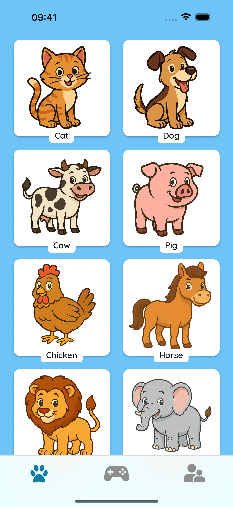
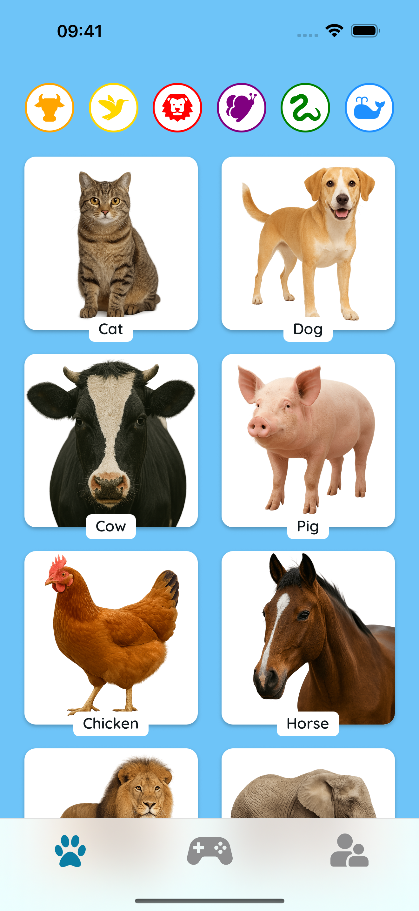
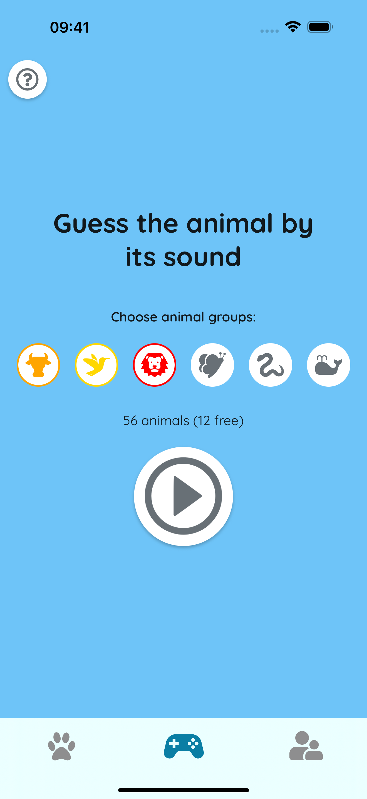
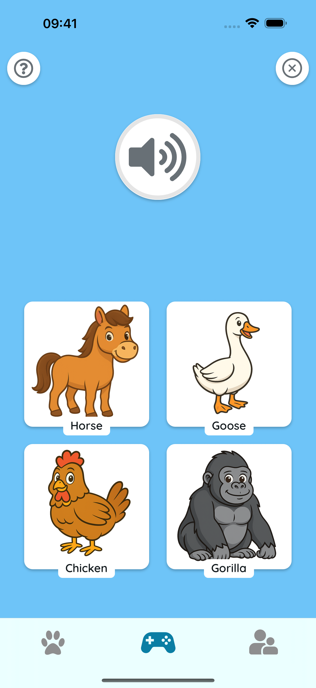

🎵 Ucz się Słuchając
Dotknij zwierząt, aby usłyszeć prawdziwe dźwięki. Idealne do wczesnego rozwoju mowy, pamięci i zabawnych chwil rodzinnych!


🧠 Baw się i Zgaduj
Słuchaj uważnie i wybierz właściwe zwierzę! Prosty tryb quizu pomaga dzieciom nauczyć się rozpoznawać dźwięki i łatwo zapamiętywać zwierzęta.


🌍 Bezpieczne i Przyjazne Dzieciom
Bez reklam. Bez śledzenia. Tylko kolorowe zwierzęta, przyjazne dźwięki i szczęśliwy czas nauki razem.